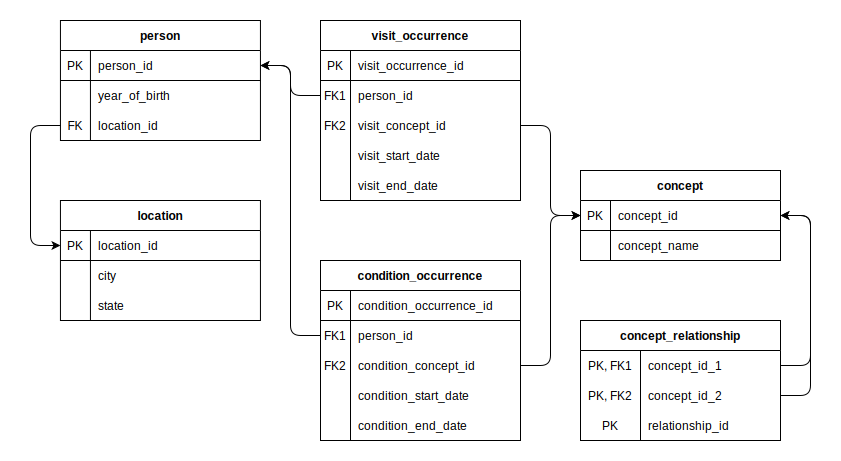

Tutorial
This tutorial will teach you how to build SQL queries using FunSQL.
Test Database
To demonstrate database queries, we need a test database. The database we use here is a tiny 10 person sample of simulated patient data extracted from a much larger CMS DE-SynPuf dataset. For a database engine, we picked SQLite. Using SQLite in a tutorial is convenient because it does not require a database server to run and allows us to distribute the whole database as a single file. FunSQL supports SQLite and many other database engines. The techniques discussed here are not specific to SQLite or this particular database. Once you learn them, you should be able to apply them to your own databases.
If you wish to follow along with the tutorial and run the examples, download the database file:
const URL = "https://github.com/MechanicalRabbit/ohdsi-synpuf-demo/releases/download/20210412/synpuf-10p.sqlite"
const DB = download(URL)During development, all the code examples here are executed on every update by the NarrativeTest package. To avoid downloading the database file more than once, we registered the download URL as an artifact and use Pkg.Artifacts API to fetch it:
using Pkg.Artifacts, LazyArtifacts
const DB = joinpath(artifact"synpuf-10p", "synpuf-10p.sqlite")To interact with a SQLite database from Julia code, we need to install the SQLite package:
using Pkg
Pkg.add("SQLite")Once the package is installed, we can use it to connect to the database:
using SQLite
const conn = SQLite.DB(DB)Later we will use the conn object to execute database queries.
Database Schema
The data in the test database is stored in the format of the OMOP Common Data Model, an open source database schema for observational healthcare data. In this tutorial, we will only use a small fragment of the Common Data Model.

Before we can start assembling queries with FunSQL, we need to make FunSQL aware of the database schema. For each table in the database, we need to create a corresponding SQLTable object, which encapsulates the name of the table together with the names of the columns.
using FunSQL: SQLTableThe patient data, including basic demographic information, is stored in the table person:
const person =
SQLTable(:person,
columns = [:person_id, :year_of_birth, :location_id])Patient addresses are stored in a separate table location, linked to the person table by the key column location_id:
const location =
SQLTable(:location,
columns = [:location_id, :city, :state])The bulk of patient data consists of clinical events: visits to healthcare providers, recorded observations, diagnosed conditions, prescribed medications, etc. In this tutorial we only use two types of events, visits and conditions:
const visit_occurrence =
SQLTable(:visit_occurrence,
columns = [:visit_occurrence_id, :person_id,
:visit_concept_id,
:visit_start_date, :visit_end_date])
const condition_occurrence =
SQLTable(:condition_occurrence,
columns = [:condition_occurrence_id, :person_id,
:condition_concept_id,
:condition_start_date, :condition_end_date])The specific type of the event (e.g., Inpatient visit or Essential hypertension condition) is indicated using a concept id column, which refers to the concept table:
const concept =
SQLTable(:concept,
columns = [:concept_id, :concept_name])Different concepts may be related to each other. For instance, Essential hypertension is a Hypertensive disorder, which itself is a Disorder of cardiovascular system. Concept relationships are recorded in the corresponding table:
const concept_relationship =
SQLTable(:concept_relationship,
columns = [:concept_id_1, :concept_id_2, :relationship_id])Why FunSQL?
Let us start with clarifying why you may want to use FunSQL. Consider a problem:
Find all patients born between 1930 and 1940 and living in Illinois, and for each patient show their current age (by the end of 2020).
The answer can be obtained with the following SQL query:
SELECT p.person_id, 2020 - p.year_of_birth AS age
FROM person p
JOIN location l ON (p.location_id = l.location_id)
WHERE (p.year_of_birth BETWEEN 1930 AND 1940) AND (l.state = 'IL')The simplest way to incorporate this query into Julia code is to embed it as a string literal:
sql = """
SELECT p.person_id, 2020 - p.year_of_birth AS age
FROM person p
JOIN location l ON (p.location_id = l.location_id)
WHERE (p.year_of_birth BETWEEN 1930 AND 1940) AND (l.state = 'IL')
"""Using an appropriate database engine API and the connection object created earlier, we can execute this query and get back the answer:
res = DBInterface.execute(conn, sql)
#-> SQLite.Query( … )As an aside, it is convenient to use the DataFrame interface to show the output of a query in tabular form:
using DataFrames
res |> DataFrame |> display
#=>
1×2 DataFrame
Row │ person_id age
│ Int64 Int64
─────┼──────────────────
1 │ 72120 83
=#FunSQL introduces an extra step to this workflow. Instead of embedding the SQL query directly into Julia code, we construct a query object:
using FunSQL: From, Fun, Get, Join, Select, Where
q = From(person) |>
Where(Fun.between(Get.year_of_birth, 1930, 1940)) |>
Join(:location => From(location) |>
Where(Get.state .== "IL"),
on = Get.location_id .== Get.location.location_id) |>
Select(Get.person_id, :age => 2020 .- Get.year_of_birth)The value of q is a composite object of type SQLNode. "Composite" means that q is assembled from components (also of type SQLNode), which themselves are either atomic or assembled from smaller components. Different kinds of components are created by SQLNode constructors such as From, Where, Fun, Get, etc.
The actual SQL query is generated by rendering the query object:
using FunSQL: render
sql = render(q, dialect = :sqlite)
print(sql)
#=>
SELECT "person_3"."person_id", (2020 - "person_3"."year_of_birth") AS "age"
FROM (
SELECT "person_1"."location_id", "person_1"."person_id", "person_1"."year_of_birth"
FROM "person" AS "person_1"
WHERE ("person_1"."year_of_birth" BETWEEN 1930 AND 1940)
) AS "person_3"
JOIN (
SELECT "location_1"."location_id"
FROM "location" AS "location_1"
WHERE ("location_1"."state" = 'IL')
) AS "location_3" ON ("person_3"."location_id" = "location_3"."location_id")
=#Notice that the render function takes a parameter called dialect. Although the SQL language is standardized, different implementations of SQL tend to deviate from the standard far enough to make them mutually incompatible. For this reason, FunSQL lets us select the target SQL dialect.
At this point, the job of FunSQL is done and, just as before, we can execute the query and display the result:
res = DBInterface.execute(conn, sql)
DataFrame(res)
#=>
1×2 DataFrame
Row │ person_id age
│ Int64 Int64
─────┼──────────────────
1 │ 72120 83
=#Why, instead of embedding a complete SQL query, we may prefer to generate it through a query object? To justify this extra step, consider that in a real Julia program, any query problem is likely parameterized by the user input:
Find all patients born between $start_year and $end_year and living in $states, and for each patient show the $output_columns.
If this is the case, the SQL query cannot be prepared in advance and must be assembled on the fly. While it is possible to assemble a SQL query from string fragments, it is tedious, error-prone and definitely not fun. FunSQL provides a more robust and effective approach: build the query as a composite data structure.
Here is how a query that depends on user input may be constructed with FunSQL:
function FindPatients(; start_year = nothing,
end_year = nothing,
states = String[])
q = From(person)
p = true
if start_year !== nothing
p = Fun.and(p, Get.year_of_birth .>= start_year)
end
if end_year !== nothing
p = Fun.and(p, Get.year_of_birth .<= end_year)
end
q = q |>
Where(p)
if !isempty(states)
q = q |>
Join(:location => From(location) |>
Where(Fun.in(Get.state, states...)),
on = Get.location_id .== Get.location.location_id)
end
q
endThe function FindPatients effectively becomes a new SQLNode constructor, which can be used by itself or as a component of a larger query object:
q = FindPatients()
print(render(q, dialect = :sqlite))
#=>
SELECT "person_1"."person_id", "person_1"."year_of_birth", "person_1"."location_id"
FROM "person" AS "person_1"
=#
q = FindPatients(start_year = 1930) |>
Select(Get.person_id)
print(render(q, dialect = :sqlite))
#=>
SELECT "person_1"."person_id"
FROM "person" AS "person_1"
WHERE ("person_1"."year_of_birth" >= 1930)
=#
q = FindPatients(start_year = 1930, end_year = 1940, states = ["IL"]) |>
Select(Get.person_id, :age => 2020 .- Get.year_of_birth)
print(render(q, dialect = :sqlite))
#=>
SELECT "person_3"."person_id", (2020 - "person_3"."year_of_birth") AS "age"
FROM (
SELECT "person_1"."location_id", "person_1"."person_id", "person_1"."year_of_birth"
FROM "person" AS "person_1"
WHERE (("person_1"."year_of_birth" >= 1930) AND ("person_1"."year_of_birth" <= 1940))
) AS "person_3"
JOIN (
SELECT "location_1"."location_id"
FROM "location" AS "location_1"
WHERE ("location_1"."state" IN ('IL'))
) AS "location_3" ON ("person_3"."location_id" = "location_3"."location_id")
=#Tabular operations
Recall the query demonstrated in the previous section:
From(person) |>
Where(Fun.and(Get.year_of_birth .>= 1930, Get.year_of_birth .< 1940)) |>
Select(Get.person_id, :age => 2020 .- Get.year_of_birth)This query is constructed from tabular operations From, Where, and Select arranged in a pipeline using the pipe (|>) operator.
In SQL, a tabular operation takes a certain number of input datasets and produces an output dataset. Tabular operations are typically parameterized by row operations, which act on a dataset row and produce a scalar value.
The From operation outputs the content of a database table. It takes one argument, a SQLTable object describing the table (see section Database Schema for the definition of person). In the context of a query expression, a SQLTable object is automatically converted to From; thus this query could condensed to:
person |>
Where(Fun.and(Get.year_of_birth .>= 1930, Get.year_of_birth .< 1940)) |>
Select(Get.person_id, :age => 2020 .- Get.year_of_birth)The Select operation allows us to customize the output columns. Column names are specified with => or using the As constructor, e.g.,
using FunSQL: As
2020 .- Get.year_of_birth |> As(:age)If the column name is not given explicitly, it is derived from the expression that calculates the column value.
As opposed to SQL, FunSQL does not require that the query has an explicit Select, so that the following expression is a valid and complete query:
q = From(person) |>
Where(Fun.and(Get.year_of_birth .>= 1930, Get.year_of_birth .< 1940))This query produces all the columns from the person table:
sql = render(q)
print(sql)
#=>
SELECT "person_1"."person_id", "person_1"."year_of_birth", "person_1"."location_id"
FROM "person" AS "person_1"
WHERE (("person_1"."year_of_birth" >= 1930) AND ("person_1"."year_of_birth" < 1940))
=#Neither From is mandatory. When a tabular operation, such as Select, that expects an input dataset isn't provided with one, it is supplied with the unit dataset containing one row and no columns. This allows us to create queries that do not depend on the content of any database tables and generate one row of output:
q = Select(Fun.current_timestamp())
sql = render(q)
print(sql)
#-> SELECT CURRENT_TIMESTAMP AS "current_timestamp"Row operations
Row operations are assembled from literal values, column references, and applications of SQL functions and operators.
Literal values are created using the Lit constructor, although the values of type Bool, Number, AbstractString and AbstractTime as well as missing are automatically wrapped with Lit when used in a query expression:
using FunSQL: Lit
Select(Lit(42))
Select(42)The SQL value NULL is represented by missing. FunSQL makes a reasonable attempt to convert Julia values to their respective SQL equivalents.
Column references are created using the Get constructor, which has several equivalent forms:
Get.year_of_birth
Get(:year_of_birth)
Get."year_of_birth"
Get("year_of_birth")Column references are always resolved at the place of use. Here, the same reference Get.year_of_birth appears several times:
From(person) |>
Where(Fun.and(Get.year_of_birth .>= 1930, Get.year_of_birth .< 1940)) |>
Select(Get.person_id, :age => 2020 .- Get.year_of_birth)As a part of Where, it refers to the column produced by the From operation, but inside Select it refers to the output of Where.
FunSQL provides an alternative notation for column references.
q1 = From(person)
q2 = q1 |>
Where(Fun.and(q1.year_of_birth .>= 1930, q1.year_of_birth .< 1940))
q3 = q2 |>
Select(q1.person_id, :age => 2020 .- q1.year_of_birth)The unbound references Get.year_of_birth and Get.person_id are replaced with bound references q1.year_of_birth and q1.person_id. If we use a bound reference, the node to which the reference is bound must be a part of the query. Note that in Select, we could replace q1 with q2 without changing the meaning of the query:
q3 = q2 |>
Select(q2.person_id, :age => 2020 .- q2.year_of_birth)Use of unbound references makes query composition more modular. For example, we could encapsulate the condition on the birth range in a Julia function as follows:
BirthRange(start, stop) =
Fun.and(Get.year_of_birth .>= start, Get.year_of_birth .< stop)
From(person) |> Where(BirthRange(1930, 1940))On the other hand, bound references sometimes make it easier to disambiguate columns of different tables.
SQL functions and operators are represented using the Fun constructor, which, just like Get, has several equivalent forms:
Fun.and(Get.year_of_birth .>= 1930, Get.year_of_birth .< 1940)
Fun(:and, Get.year_of_birth .>= 1930, Get.year_of_birth .< 1940)
Fun."and"(Get.year_of_birth .>= 1930, Get.year_of_birth .< 1940)
Fun("and", Get.year_of_birth .>= 1930, Get.year_of_birth .< 1940)Certain SQL operators, notably comparison operators, also support broadcasting notation:
Fun.">="(Get.year_of_birth, 1930)
Get.year_of_birth .>= 1930FunSQL has support for serializing some of the widely used SQL functions and operators with irregular notation. For example:
q = From(person) |>
Select(:generation => Fun.case(Get.year_of_birth .<= 1960,
"boomer", "millenial"))
print(render(q))
#=>
SELECT (CASE WHEN ("person_1"."year_of_birth" <= 1960) THEN 'boomer' ELSE 'millenial' END) AS "generation"
FROM "person" AS "person_1"
=#